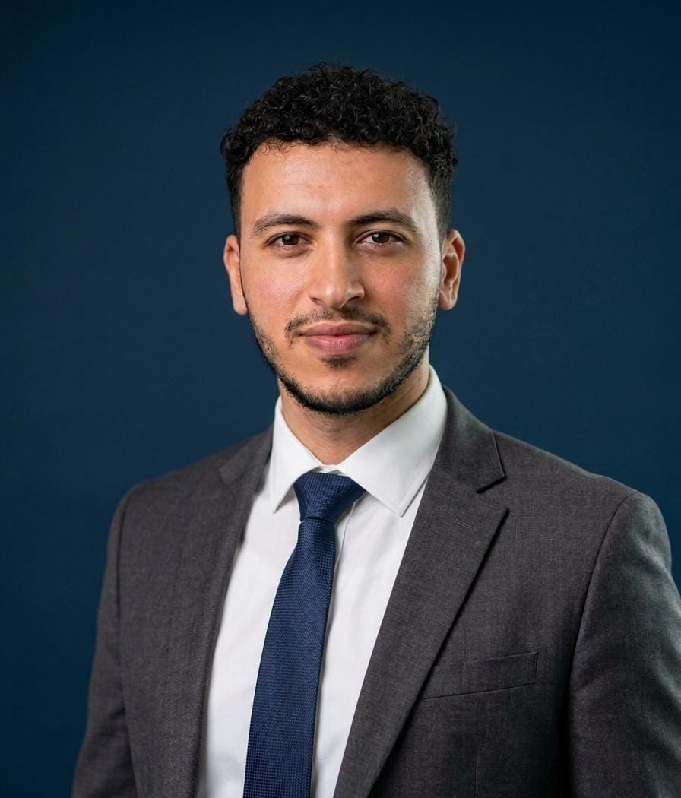

Online-Diplom TGA / HKLS
House of Engineers – Planung von HKLS-Anlagen; Projektarbeiten mit Carrier HAP 4.9 und AutoCAD (siehe Projekte 01 und 02).
Ich bin Mostafa Salama. Dieses Portfolio zeigt ausgewählte technische Arbeiten anhand von Zeichnungen, Berechnungen, CAD-Modellen und realen Prototypen – von HVAC/TGA über Solartracking bis zur Fahrzeugtechnik.
Ab sofort verfügbar für Aufgaben in TGA / HKLS / Energietechnik – NRW & bundesweit

Jedes Projekt enthält eine technische Einordnung sowie die zugehörigen Fotos und Zeichnungen. Klicken Sie auf ein Bild für die Großansicht.
Abgeschlossene und laufende Qualifikationen neben dem Studium.
House of Engineers – Planung von HKLS-Anlagen; Projektarbeiten mit Carrier HAP 4.9 und AutoCAD (siehe Projekte 01 und 02).
Zertifikat für mechanische Konstruktion mit SOLIDWORKS.
Concept Class, Cairo University Racing Team; Teilteam Kühlung und Wärmetauscher.
Kurse: SPS-Grundlagen, Frequenzumrichter-Antriebe (VFD), Hydraulik und Elektrohydraulik.
San3a Tech / American Center Cairo
Die Beispiele verbinden technische Berechnungen, Modellierung, praktische Fertigung und Dokumentation.
Raumweise Datenaufnahme, Kühllasten mit Carrier HAP 4.9, Geräteauswahl (Wand- und Kassetten-Splitgeräte), Luftkanalsysteme und 2D-Planung.
Fusion 360, parametrische Zeichnungen, Laserschnitt und Prototypenmontage.
Einblicke in Formula-Student-Fahrzeugtechnik und technische Messausrüstung.
Offen für fachlichen Austausch und Möglichkeiten in Gebäudetechnik, Energie, Konstruktion und technischer Projektarbeit.
Ab sofort verfügbar für Aufgaben in TGA / HKLS / Energietechnik – NRW & bundesweit